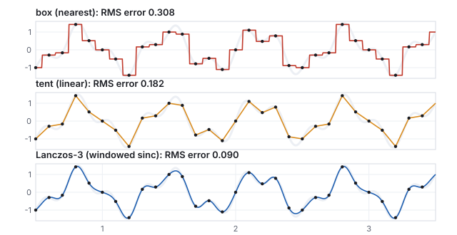
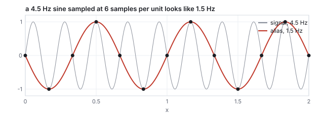
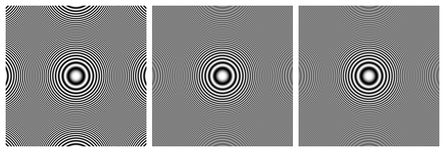
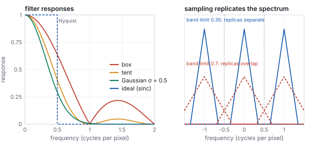
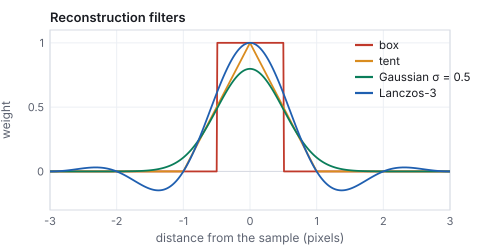
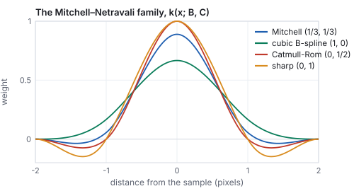
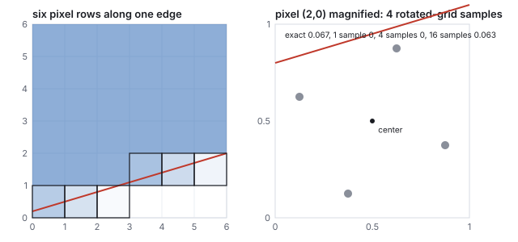
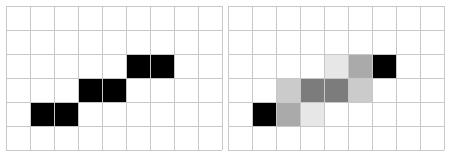
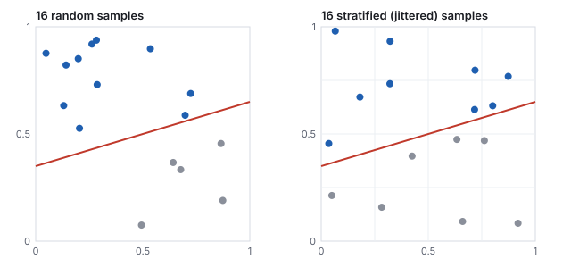

This chapter links to the course’s interactive demos and uses MathJax for its
formulas. Read it through the course website (or download the file and open it in a
browser); a Canvas inline preview will reach neither the demos nor the math.
All chapters.
Sampling and Antialiasing
CSS 551 · Advanced 3D Computer Graphics · course text
Course text · the one problem behind jagged edges, shimmering textures, moiré and wagon wheels: a continuous picture is looked at in a finite number of places. The sampling theorem and reconstruction filters, the Fourier view, aliasing and where it comes from, prefiltering against supersampling, filter families, coverage and multisampling along an edge, antialiased lines, texture derivatives and mip selection, shading aliasing, sample patterns, and aliasing in time. Not tied to a lecture; it gathers what the rasterization, texture-mapping and image-space chapters each met in passing.
Three earlier chapters ran into the same wall from different sides: the rasterizer’s stair-stepped edges, the texture sampler’s shimmering checker, the image-space chapter’s stripes that vanished when sampled at their own frequency. This chapter is that wall. A rendered image is a continuous function looked at on a grid of pixel centers, and the sampling theorem says exactly when the grid can represent the function and what happens when it cannot: frequencies above half the sampling rate do not disappear, they come back as lower frequencies that were never there. The chapter works the theorem on a two-tone signal reconstructed by three filters, aliases a sine by hand, renders a zone plate to see the false rings appear, and then turns to the remedies a renderer has: filter before sampling, or sample more and average. The Fourier view says why in one picture: sampling replicates the spectrum, and a filter is a window on it. Multisampling is worked pixel by pixel along one edge, a line is drawn with exact coverage, the mip level of a texture is read off its screen-space derivatives, a normal map’s shininess is corrected for the detail it averages away, stratified sampling is measured against random sampling over two thousand trials, and the closing section treats time as one more axis, where a spinning wheel filmed at 24 frames per second is the same theorem with the same cure.
Definition (sampling, reconstruction, band limit)
Sampling a function \(f\) at rate \(f_s\) records the values \(f(k/f_s)\). Reconstruction builds a
continuous function from the samples by placing a copy of a filter \(h\) at each sample,
scaled by its value: \(\tilde f(x) = \sum_k f(k/f_s)\, h\bigl(x f_s - k\bigr)\). A function is
band-limited to \(B\) if it contains no frequency above \(B\).
The sampling theorem (Nyquist, Shannon)
A function band-limited to \(B\) is exactly determined by samples at any rate \(f_s > 2B\), and the
reconstruction that recovers it is the sinc filter, \(h(u) = \sin(\pi u)/(\pi u)\). The rate
\(f_s/2\) is the Nyquist frequency: the highest frequency the samples can hold.

One band-limited signal, ten samples per unit, three reconstructions. The gray band is the original; the RMS errors are measured by the generator.
Worked example (a signal below Nyquist)
\(f(x) = \sin(2\pi\cdot1.5x) + \tfrac12\sin(2\pi\cdot4x)\) contains frequencies 1.5 and 4; sampled at
\(f_s = 10\), the Nyquist frequency is 5 and the theorem applies. Reconstructing with a box
(hold each sample, the nearest-neighbor rule) gives a staircase with RMS error \(0.308\) against
the signal’s own RMS of \(0.791\); a tent (linear interpolation) gives \(0.182\); a
Lanczos-3 filter, a sinc windowed to six samples wide, gives \(0.090\), and a full sinc would give
zero. The samples are the same in all three; the filter decides how much of the signal comes back.
In graphics the roles are: the scene is \(f\), the pixel grid is the sampling, and the display
(a grid of small squares) plus the eye (a low-pass filter of its own) is the reconstruction. The
display’s reconstruction is a box, the worst of the three above, and it cannot be changed;
everything the renderer does about aliasing happens on the sampling side.
2 · Aliasing
Above Nyquist the theorem fails in a specific way. A frequency \(f > f_s/2\) produces exactly the
same samples as the frequency \(|f - k f_s|\) for the integer \(k\) that lands the result in
\([0, f_s/2]\). The samples cannot tell them apart, and reconstruction produces the low one: an
alias. The high frequency is not lost; it is replaced by a wrong low one, which is worse.

A 4.5 Hz sine sampled six times per unit. The samples fit a 1.5 Hz sine exactly; nothing in them records the true frequency.
Worked example (the alias frequency)
\(f = 4.5\), \(f_s = 6\), Nyquist \(3\): \(|4.5 - 6| = 1.5\). The image-space chapter’s stripes
are the same computation: 4 periods across 8 pixels is exactly Nyquist and samples the zero
crossings (uniform gray), 8 periods is \(|8 - 8| = 0\) (uniform, a constant alias). The texture
chapter’s distant checker aliases the same way in two dimensions, and the moiré it shows is
the alias of a pattern whose frequency drifts smoothly past Nyquist.

A zone plate, \(\tfrac12 + \tfrac12\cos(k r^2)\), whose local frequency grows with the radius and passes Nyquist at \(r = 60\) px. Left, one sample per pixel: beyond that radius the rings that appear are aliases, and they curve the wrong way. Middle and right, 16 and 256 samples averaged per pixel: the unrepresentable region blends to gray, which is the correct rendering of a pattern finer than a pixel.
Every aliasing artifact in rendering is this picture somewhere. A polygon edge is a step, which
contains all frequencies, so its samples alias into the staircase. A texture’s texels, a
striped shirt, a distant fence, a specular highlight narrower than a pixel: each is content above
Nyquist, and each turns into something that crawls when the camera moves, because the aliases
change with the sample phase while the true content does not.
3 · The Fourier view
Everything above has a compact statement in the frequency domain, where a signal is described by
how much of each frequency it contains (its spectrum, the Fourier transform; the discrete
cosine basis of the image-space chapter is the same idea on a
finite image). Three facts do all the work.
Sampling, filtering, and reconstruction in the frequency domain
Sampling at rate \(f_s\) makes the spectrum periodic: copies of the original spectrum appear
centered at every multiple of \(f_s\). If the original is band-limited below \(f_s/2\), the copies do
not overlap and the original can be cut back out; if not, the copies overlap and add, which is
aliasing. Filtering is multiplication in frequency (the convolution theorem: convolving with
\(h\) multiplies the spectrum by \(H\)), so a reconstruction filter is a window on the spectrum,
and the ideal window, 1 below Nyquist and 0 above, is the transform of the sinc.

Left: what each filter lets through, by frequency. Right: sampling at one sample per pixel replicates the spectrum at every integer; a signal band-limited to 0.35 cycles per pixel survives, one limited to 0.7 overlaps itself.
Worked example (what the box lets through)
The box filter’s response is \(|\mathrm{sinc}(f)|\), the tent’s \(\mathrm{sinc}^2(f)\), with \(f\) in
cycles per pixel. At the Nyquist frequency \(0.5\), where an ideal filter would still pass everything,
the box passes 0.637 and the tent 0.405, which is why they blur. At \(1.5\) cycles per pixel, which an
ideal filter would block entirely, the box still passes 0.212 and the tent 0.045: the box’s side
lobes are why box-averaged supersampling leaves residual aliasing, and why four samples in a box
are not four times better than one. A Gaussian of \(\sigma = 0.5\) pixels passes 0.291 at Nyquist and
0.007 at one cycle per pixel: more blur, almost no leakage. Every practical filter sits somewhere
on this trade, and the plot on the left is the whole comparison.
The frequency view also explains the remedies of the next section. A mipmap level is the texture
with everything above that level’s Nyquist removed, so sampling it cannot alias. Supersampling
raises \(f_s\), pushing the replicas apart, and then box-filters, which is why it helps in proportion
to the sample count rather than absolutely. And jittered sampling (Section 10) turns the regular
replicas into a spread of noise, which the eye reads as grain rather than as a pattern.
4 · Two remedies: prefilter, or supersample
The theorem also says what to do. Content above Nyquist must be removed before sampling,
by a low-pass filter; after sampling it is too late. A renderer can do this two ways.
Prefilter analytically when the content’s form allows it. The mipmap of
the texture chapter stores the texture already
filtered at every scale, so the sampler reads a version with nothing above its Nyquist. The
exact coverage of a triangle in a pixel is an integral a rasterizer can compute for edges. A
line can be drawn as a narrow filtered ridge instead of a set of hit pixels. Each of these is
exact and cheap, and each applies to one kind of content only.
Supersample when it does not: evaluate the scene at several positions inside each
pixel and average. Averaging is a box filter applied to the samples, which attenuates high
frequencies without removing them, so supersampling reduces aliasing in proportion to the sample
count rather than eliminating it (the 16-sample zone plate still shows faint structure). It works
on anything, including shading and shadows, at a cost proportional to the sample count.
Real pipelines use both: mipmaps for textures, analytic or multisampled coverage for edges, and
supersampling (spatial or temporal, Section 11) for what remains. The one thing that is never done
is nothing: a modern renderer at one sample per pixel with no filtering is the left zone plate.
5 · Filters, and the Mitchell–Netravali family

Filter kernels. The wider the filter, the more it blurs and the better it suppresses aliases; the Lanczos filter’s negative lobes (minimum \(-0.147\)) sharpen but can overshoot.
A filter is a trade between blur and aliasing. The box, one pixel wide, is what
averaging samples in a pixel does; it passes a lot of high frequency (its response falls only as
\(1/f\)), so box-filtered supersampling needs many samples. The tent and
Gaussian attenuate faster at the price of blurring across neighboring pixels. The
Lanczos filter, a sinc windowed by a wider sinc, is the closest practical thing to
the ideal: it keeps frequencies below Nyquist nearly untouched and cuts those above, but its negative
lobes produce halos at sharp edges (a dark line beside a bright one), which is why image editors
offer it for resizing and games rarely use it for antialiasing. A renderer’s choice is usually a
filter between one and two pixels wide, Gaussian or a mild raised cosine, applied to the samples of
the pixel and its neighbors; Pixar’s RenderMan exposes exactly this as a filter name and width.
Definition (the Mitchell–Netravali cubics)
A two-parameter family of piecewise cubic filters on \([-2, 2]\),
\[
k(x) = \frac16\begin{cases}
(12 - 9B - 6C)|x|^3 + (-18 + 12B + 6C)|x|^2 + (6 - 2B) & |x| < 1 \\
(-B - 6C)|x|^3 + (6B + 30C)|x|^2 + (-12B - 48C)|x| + (8B + 24C) & 1 \le |x| < 2,
\end{cases}
\]
with \(B + 2C = 1\) the line of good filters. \((1, 0)\) is the cubic B-spline of
the curves chapter, a blurry filter with no negative lobe;
\((0, \tfrac12)\) is Catmull–Rom, which interpolates the samples exactly and rings;
\((\tfrac13, \tfrac13)\) is Mitchell and Netravali’s recommendation, the compromise that
image resizers default to.

The Mitchell–Netravali family. More \(C\) means a sharper filter with deeper negative lobes; more \(B\) means blur.
Worked example (Mitchell at half a pixel)
With \(B = C = \tfrac13\) at \(|x| = 0.5\): the cubic term \((12 - 3 - 2)(0.125) = 0.875\), the quadratic
\((-18 + 4 + 2)(0.25) = -3\), the constant \(6 - \tfrac23 = 5.333\); the sum \(3.208\), divided by 6,
\(k(0.5) = 0.535\). At the same distance the B-spline gives 0.479, Catmull–Rom 0.563, and at
\(|x| = 1.5\) Mitchell dips to \(-0.035\) against Catmull–Rom’s \(-0.063\). The four weights any
one output pixel uses always sum to 1: at a fractional position 0.3 they are
\(-0.020, 0.309, 0.740, -0.030\).
6 · Edges: coverage, multisampling, and morphological methods
A polygon edge crossing a pixel should color the pixel by the fraction of the pixel the polygon
covers. Point sampling at the center gives 0 or 1; supersampling with \(n\) samples gives one of
\(n + 1\) levels. The table follows one edge across six pixels, with the exact coverage against
one, four and sixteen samples:

The edge \(y = 0.3x + 0.2\), with the region above it inside. Right: pixel \((2, 0)\), whose true coverage is 6.7 %, has no sample inside at 1 or 4 samples and one of sixteen at 16.
pixel
exact coverage
1 sample
4 samples
16 samples
(0, 0)
0.650
1
0.50
0.625
(1, 0)
0.350
0
0.50
0.375
(2, 0)
0.067
0
0
0.063
(3, 1)
0.750
1
0.75
0.750
(4, 1)
0.450
0
0.50
0.438
(5, 1)
0.150
0
0
0.125
Four samples put every edge pixel within 0.15 of its true coverage; sixteen within 0.03. The four
are placed on a rotated grid rather than a \(2\times2\) square so that no two share a row or
a column: a nearly horizontal or vertical edge then crosses them one at a time, giving five distinct
levels instead of three. Hardware patterns for 8 and 16 samples follow the same principle.
Definition (SSAA and MSAA)Supersample antialiasing runs the whole pipeline, shading included, at \(n\) samples per
pixel: \(n\) times the fragment-shader cost. Multisample antialiasing tests coverage and
depth at \(n\) samples but runs the fragment shader once per pixel per triangle and writes its
color to every covered sample; the resolve averages the samples. Edges get \(n\)-sample quality
at roughly the memory cost of SSAA and the shading cost of no antialiasing. Interior aliasing (a
texture, a highlight) is untouched, which is what mipmaps and Sections 8 and 9 are for.
Two devices extend coverage beyond geometry. Alpha to coverage converts a fragment’s
alpha into a subset of its MSAA samples (alpha 0.5 writes two of four), so foliage cut out by an
alpha test gets antialiased leaf edges without sorting, at the price of the dither pattern being
visible at low sample counts. Coverage to alpha goes the other way: a rasterizer that
computes exact edge coverage (the rows in the table above) writes it as alpha and lets the blend
stage do the averaging, which is how vector graphics and text are antialiased.
Morphological antialiasing (FXAA, SMAA, and their relatives) runs after the frame, on the
colors alone: it detects edges from local contrast, estimates each edge’s direction and length
from the pattern of pixels it steps across, and blends along it as if the coverage had been known.
It costs one full-screen pass and no extra samples, handles edges MSAA cannot (the ones inside a
shader’s alpha test, or a deferred pipeline whose G-buffer cannot be multisampled), and fails on
what it cannot see: subpixel detail that was never rendered, text, and any edge the contrast test
misses. It blurs slightly; it is the cheapest option and the default in many engines when temporal
methods are off.
7 · Lines: exact coverage, Wu’s way
A one-pixel line is the simplest primitive whose coverage can be computed exactly. Bresenham’s
algorithm lights one pixel per column, the one nearest the line; Wu’s (1991) lights the two
pixels the line passes between, weighted by how close the line is to each.
Definition (Wu’s line)
For a line of gradient \(|m| \le 1\), at each integer column \(x\) the line’s height is
\(y = y_0 + m(x - x_0)\); write \(y = \lfloor y \rfloor + f\). The pixel at \(\lfloor y \rfloor\) gets
intensity \(1 - f\) and the pixel above it gets \(f\). For steep lines swap the roles of \(x\) and
\(y\). The two weights are the line’s area coverage of the two pixels for a line one pixel wide.

The segment from \((1, 1)\) to \((6, 3)\), by Bresenham (six pixels) and by Wu (ten, in weighted pairs). The Wu line is drawn in linear light and encoded; the two grays in a column always sum to one pixel of ink.
Worked example (the segment column by column)
Gradient \(m = 2/5 = 0.4\). At \(x = 2\), \(y = 1.4\): pixel \((2, 1)\) gets \(0.6\), pixel \((2, 2)\) gets
\(0.4\). At \(x = 3\), \(y = 1.8\): \(0.2\) and \(0.8\). At \(x = 4\), \(y = 2.2\): pixel \((4, 2)\) gets \(0.8\),
\((4, 3)\) gets \(0.2\). At \(x = 5\), \(y = 2.6\): \(0.4\) and \(0.6\). The endpoints fall on integers
and get a single full pixel. Bresenham would round \(1.4 \to 1\), \(1.8 \to 2\), \(2.2 \to 2\),
\(2.6 \to 3\), the staircase on the left. The intensities are coverages, so they must be blended in
linear light (the color chapter): a 0.4 coverage of black on white is
light 0.6, code 201, not code 153.
8 · Textures: derivatives and the mip level
The texture chapter said the sampler picks the
mip level whose texels are about a pixel wide. The number it picks from is the footprint of one
pixel on the texture, and the GPU has it for free: fragments are shaded in \(2\times2\) blocks, so
the difference of \((u, v)\) between neighbors, the screen-space derivatives
\(\partial u/\partial x\) and so on, is one subtraction.
Definition (level of detail from derivatives)
For a texture of \(T\) texels on a side, the footprint’s extents along the two screen axes are
\(\rho_x = T\sqrt{u_x^2 + v_x^2}\) and \(\rho_y = T\sqrt{u_y^2 + v_y^2}\) texels per pixel, and the
level is \(\lambda = \log_2 \max(\rho_x, \rho_y)\). Trilinear filtering blends levels
\(\lfloor\lambda\rfloor\) and \(\lceil\lambda\rceil\) with weight \(\lambda - \lfloor\lambda\rfloor\). Anisotropic
filtering instead takes \(\lambda\) from the smaller extent and takes \(\rho_{\max}/\rho_{\min}\)
samples along the larger one.
Worked example (one pixel’s level)
A 256-texel texture with derivatives \(u_x = 0.0125\), \(v_x = 0.002\), \(u_y = 0.001\), \(v_y = 0.009\):
\(\rho_x = 256\sqrt{0.0125^2 + 0.002^2} = 3.24\) texels per pixel, \(\rho_y = 2.32\), so
\(\lambda = \log_2 3.24 = 1.70\): the sampler blends level 1 (where the footprint is 1.62 texels)
with level 2 (0.81 texels) at weight 0.70 toward level 2. The footprint is 1.4 times longer in
\(x\) than in \(y\); an anisotropic sampler would use \(\lambda = \log_2 2.32 = 1.21\), a sharper level,
and take two samples along \(x\). The same texture at 512 texels doubles both extents and adds
exactly one to \(\lambda\); a texture at any size is filtered to the same screen frequency.
The derivatives are also why a texture read inside a branch that only some pixels of a
\(2\times2\) block take is undefined in the shading languages: the neighbor needed for the
subtraction did not run. Explicit-gradient and explicit-level lookups exist for that case.
9 · Shading aliasing
Coverage antialiasing fixes edges and mipmaps fix textures, and a third source remains: the
lighting itself. A specular highlight of high shininess is a narrow function of the normal, and a
normal map (the texture chapter) stores normals that vary
at texel scale. Far away, a pixel covers many texels whose normals disagree; the mip average of
those normals is a shorter vector pointing in the mean direction, and lighting it with the original
shininess produces a highlight that flickers as the bumps slide under the pixel. The average
normal’s length is a measure of how much they disagreed, and Toksvig’s trick (2005)
uses it to widen the highlight by exactly the missing spread.
Definition (Toksvig’s correction)
If the averaged normal has length \(\ell \le 1\), replace the Phong exponent \(s\) by
\[
s' = \frac{\ell\, s}{\ell + s\,(1 - \ell)}.
\]
For \(\ell = 1\) nothing changes; as \(\ell\) drops, \(s'\) falls toward \(\ell/(1 - \ell)\) regardless
of \(s\), the spread of the normals themselves.
Worked example (a rough patch seen from afar)
Two normals \(30^\circ\) apart average to a vector of length \(\cos 15^\circ = 0.966\); a patch of
bumps averaging to \(\ell = 0.9\) is rougher still. With \(s = 64\): \(s' = 0.9\cdot64 / (0.9 + 64\cdot0.1)
= 57.6/7.3 = 7.9\). The highlight of the illumination chapter’s worked point, which at
\(28.5^\circ\) off the mirror gave \(0.879^{64} \approx 0.0003\), becomes \(0.879^{7.9} = 0.36\): a
broad sheen, which is what a distant rough surface looks like, in place of a pinpoint that lands on
a random bump. At \(\ell = 0.98\), \(s' = 27.8\); at \(\ell = 0.7\), 2.3; and raising \(s\) to 256 at
\(\ell = 0.9\) gives only 8.7, the normals’ own spread dominating. The correction is computed
once per mip level and stored beside the normal map.
The same idea generalizes: any shading term that is nonlinear in a mipmapped input (a highlight
in a normal, a threshold in a height, a Fresnel curve in a roughness) aliases under
minification, and the fix is to store what the term needs to reproduce its average, not the
average of its input. Physically based renderers fold this into roughness (specular antialiasing,
LEAN and LEADR mapping) and the frontier is to filter the whole BRDF.
10 · Sample patterns
Where the \(n\) samples sit matters as much as how many there are. A regular grid turns aliasing
into regular patterns, the moiré of Section 2. Random positions turn it into noise, which the
eye forgives, at the cost of variance. Stratified (jittered) positions, one random sample
in each cell of an \(m\times m\) grid, keep the noise while cutting the variance.

Sixteen random samples and sixteen stratified samples of the same half-plane coverage. The random set happens to over-count the inside; the stratified set cannot clump.
Worked example (the variance, measured)
A pixel half covered by an edge, estimated with 16 samples, over 2,000 trials. Random samples: RMS
error \(0.127\), matching the binomial prediction \(\sqrt{0.5\cdot0.5/16} = 0.125\). Stratified
samples: RMS error \(0.054\), 2.35 times smaller. For an edge the stratified error falls as
\(N^{-3/4}\) rather than \(N^{-1/2}\), because only the cells the edge crosses contribute any
uncertainty; the same four-fold sample increase halves the random error and cuts the stratified error
by 2.8. This is the sample-count economics of the ray-tracing
chapter, improved by the pattern. Blue-noise patterns, whose points repel each other across the
whole image rather than within a pixel, go further still and are the current practice for real-time
renderers.
11 · Aliasing in time, and upsampling
A frame sequence samples the scene in time at the frame rate, and the theorem applies unchanged.
A wheel with 12 spokes turning at 2 revolutions per second advances \(720^\circ/24 = 30^\circ\)
per frame at 24 frames per second, exactly one spoke: every frame shows the same picture and the
wheel appears stopped. A little faster and it appears to turn slowly backward, the alias of its true
rotation. A film camera prefilters in time with its shutter, which integrates motion over a fraction
of the frame interval, and the blur it records is the box filter of Section 4 along the time axis; a
renderer without motion blur samples an instant and strobes.
Temporal antialiasing (TAA) turns the frame sequence into a supersampler: each frame
jitters its sample position by a sub-pixel offset, and the result is blended with the previous
frames reprojected through the camera motion, so that over a few frames every pixel has been sampled
at several positions at the cost of one sample per frame. It is the default antialiasing of current
engines because it also averages shading, shadows and reflections, which MSAA does not. Its failure
is history that no longer applies: a newly revealed surface has none, and a fast-moving edge trails
a ghost until the history catches up. With a blend weight of 0.1 per frame, a pixel reaches 90 %
of a new value after 22 frames, about a third of a second at 60 Hz, which is the length of the
ghost. Motion blur and TAA are both the sampling theorem told to integrate over time; the
difference is whether the integral is over one frame or several.
The same history makes temporal upsampling possible: render at a lower resolution with a
jitter that walks over the missing pixel positions, and accumulate the frames into a full-resolution
image, so that four frames at half resolution in each axis supply the samples of one full frame.
The learned upscalers now shipped with every GPU vendor’s driver are this accumulation with a
neural network deciding, per pixel, how much of the history to trust; their inputs are exactly the
jittered frame, the depth, and the motion vectors that TAA already needed.
Pitfall (antialiasing in the wrong space, and on the wrong grid)
Two failures produce edges that are technically antialiased and still look wrong. Blending coverage
in code space: a half-covered white edge on black written as code 128 emits 21 % of the light, so
thin bright lines look thinner and darker than they are (a one-pixel white line at half coverage
on both sides carries 42 % of its light instead of 100 %); coverage is a fraction of light and must be blended
before encoding, which is why sRGB framebuffers exist. Supersampling on a regular grid: four
samples in a \(2\times2\) square give a near-vertical edge only three coverage levels, and a pattern
with a period of two pixels still samples the same phase in every pixel, so a fine grid aliases
exactly as it did at one sample. The rotated grid of Section 6 and the jitter of Section 10 exist
to break both regularities.
prints random 0.126 stratified 0.053, the ratio of Section 10 with a different generator.
Open the rasterization demo,
set the resolution to its minimum, and rotate the triangle slowly: count how many pixels change on
one edge for a rotation of a few degrees, then raise the resolution and repeat. The crawl is the
alias of the edge’s motion.
Open the texture placement demo
at tile 6 and tilt the view until the far checks dissolve; that is the left zone plate. The demo
uses nearest filtering without mipmaps on purpose.
Papers
C. E. Shannon, “Communication in the Presence of Noise,” Proceedings of the IRE 37(1),
1949. F. Crow, “The Aliasing Problem in Computer-Generated Shaded Images,” Communications of
the ACM 20(11), 1977. R. Cook, “Stochastic Sampling in Computer Graphics,” ACM Transactions
on Graphics 5(1), 1986 (jittered sampling). D. Mitchell and A. Netravali, “Reconstruction
Filters in Computer Graphics,” SIGGRAPH 1988. K. Akeley, “RealityEngine Graphics,”
SIGGRAPH 1993 (hardware multisampling). X. Wu, “An Efficient Antialiasing Technique,”
SIGGRAPH 1991. M. Toksvig, “Mipmapping Normal Maps,” Journal of Graphics Tools 10(3), 2005.
T. Lottes, “FXAA,” NVIDIA white paper, 2009. J. Jimenez et al., “SMAA: Enhanced Subpixel
Morphological Antialiasing,” Eurographics 2012. B. Karis, “High-Quality Temporal
Supersampling,” SIGGRAPH course, 2014.
12 · Exercises
Exercise 1 (Nyquist)
A 1080-row display shows a pattern of horizontal stripes. What is the finest stripe period it can show without aliasing? What does a pattern of 1.5-pixel period look like?
Solution
Two rows per period (one light, one dark) is Nyquist: 540 periods, and only if the phase is right. A 1.5-pixel period has frequency \(2/3\) cycles per pixel, above Nyquist (\(1/2\)); its alias is \(|2/3 - 1| = 1/3\) cycles per pixel, a 3-pixel period: broader stripes than the true ones.
Exercise 2 (the alias)
A texture has 64 texel-wide checks and is drawn so that one check spans 0.8 pixels. What period appears on screen?
Solution
Frequency \(1/0.8 = 1.25\) cycles per pixel; alias \(|1.25 - 1| = 0.25\): a 4-pixel period, five times coarser than the true checks. A mipmap would instead select a level where the check spans several texels averaged to gray.
Exercise 3 (coverage levels)
How many distinct gray levels can an edge pixel take with 8 MSAA samples? What sample pattern would waste them on a vertical edge?
Solution
Nine (0 to 8 covered). A pattern with two samples per column would make a vertical edge cover samples two at a time, giving only five levels; the rotated-grid rule (no two samples in a column or row) keeps all nine.
Exercise 4 (cost)
A frame at 1080p shades 4 million fragments (overdraw 2) at 300 instructions each. Compare the shading cost of 4× SSAA and 4× MSAA, and their framebuffer memory.
Solution
SSAA: 16 million fragments, \(4.8\times10^9\) instructions, four times the base; MSAA: 4 million fragments, \(1.2\times10^9\), the same as no antialiasing. Both store 4 samples per pixel: about 33 MB for color and as much again for depth, against 8 MB and 8 MB.
Exercise 5 (stratified)
With the measured errors of Section 6, how many random samples match 16 stratified ones on the edge?
Solution
Random error \(0.5/\sqrt N\); setting it to \(0.054\) gives \(N = (0.5/0.054)^2 = 86\). Five times the samples for the same edge quality.
Exercise 6 (time)
A propeller with 3 blades spins at 40 revolutions per second, filmed at 30 frames per second. What does it appear to do?
Solution
Per frame it turns \(40 \cdot 360 / 30 = 480^\circ\). The blade pattern repeats every \(120^\circ\), so \(480^\circ\) is equivalent to \(0^\circ\): it appears stationary. At 41 rev/s it would turn \(12^\circ\) per frame, a slow forward creep of one revolution every 30 frames.
Exercise 7 (the Fourier view)
What fraction of a 0.25 cycle-per-pixel signal (a 4-pixel period) survives box reconstruction? Tent? Is either visibly blurred?
Solution
\(|\mathrm{sinc}(0.25)| = 0.900\) and \(\mathrm{sinc}^2(0.25) = 0.811\): a 10 % and a 19 % loss of contrast on a 4-pixel pattern, both visible in a side-by-side, neither objectionable. At a 2-pixel period (Nyquist) the losses are 36 % and 60 %.
Exercise 8 (mip level)
The pixel of Section 8 is now on a 512-texel texture, and the camera moves so all derivatives double. What level, and how many texels per pixel at it?
Solution
Each doubling adds 1 to \(\lambda\): 512 texels gives \(2.70\), doubled derivatives \(3.70\): levels 3 and 4, weight 0.70. At level 3 the footprint is \(12.96/8 = 1.62\) texels per pixel, the same as before at level 1, because the level tracks the footprint.
Exercise 9 (Toksvig)
A normal map averages to \(\ell = 0.95\) at some level, with \(s = 128\); and a very rough one to \(\ell = 0.5\) with \(s = 64\). Effective exponents?
Solution
\(0.95\cdot128/(0.95 + 128\cdot0.05) = 121.6/7.35 = 16.5\); \(0.5\cdot64/(0.5 + 32) = 0.98\). At \(\ell = 0.5\) the surface is effectively Lambertian: the bumps face everywhere, and a highlight has nothing to reflect from.
Exercise 10 (Wu, with code)
Write Wu’s algorithm for the steep segment \((0, 0)\) to \((4, 6)\): which axis is stepped, and what are the two weights on row 4?
Solution
Gradient \(1.5 > 1\), so step \(y\) and compute \(x = \tfrac23 y\). Row 4: \(x = 2.67\), pixels \((2, 4)\) at \(0.33\) and \((3, 4)\) at \(0.67\). Rows 0, 3 and 6 land on integers and get one full pixel each; the other four rows get pairs, 11 pixels in all against Bresenham’s 7.